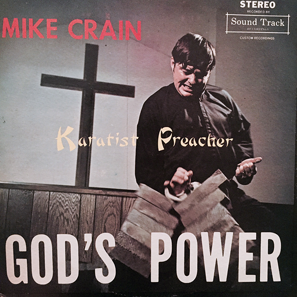

about the project
Started in 2010, The Holy Sea is a sonic odyssey in 8 parts, loosely based on the liturgical Mass. Consisting of Red, White, Blue, Purple, Green, Black, Pink, and Clear, each portrait follows an orbit of radiophonic art, electroacoustic sound, religious rite, found sounds and theater machine. Every sound is extracted from hundreds of pre-existing & highly obscure vinyl records and placed into an entirely new and allegorical conversation about Life, Love, Spirituality, and Death.